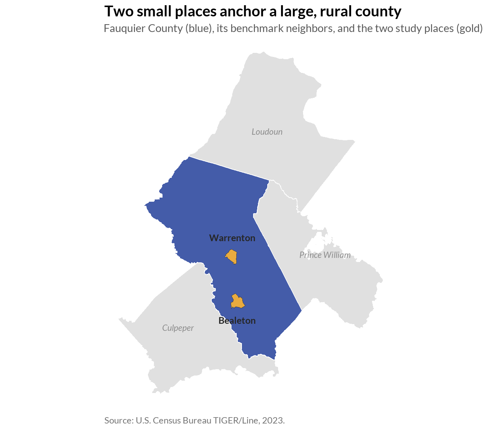
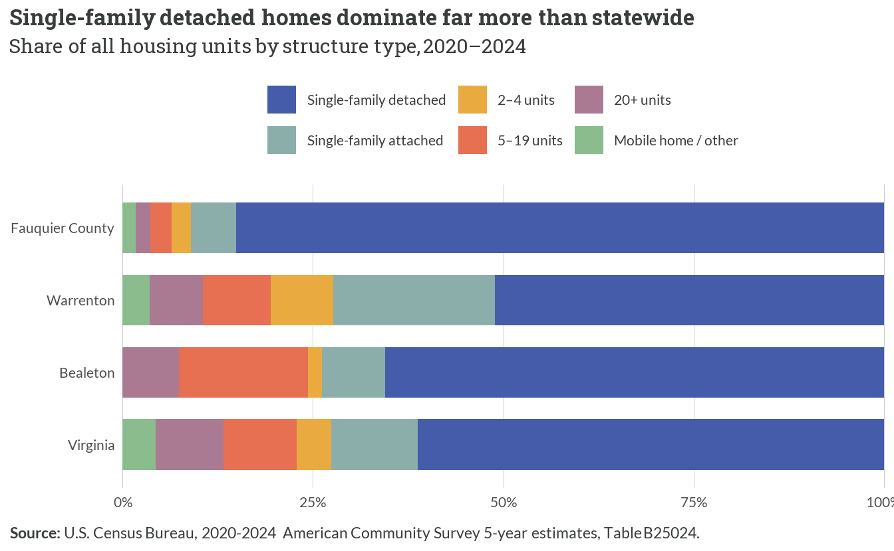
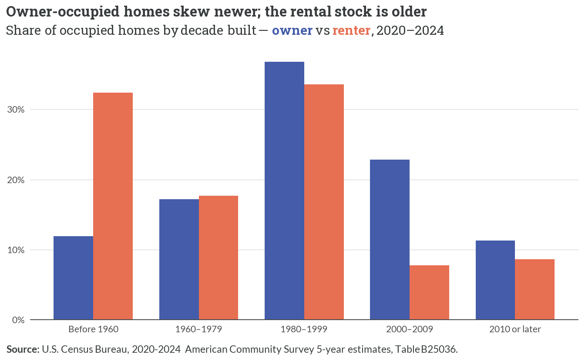
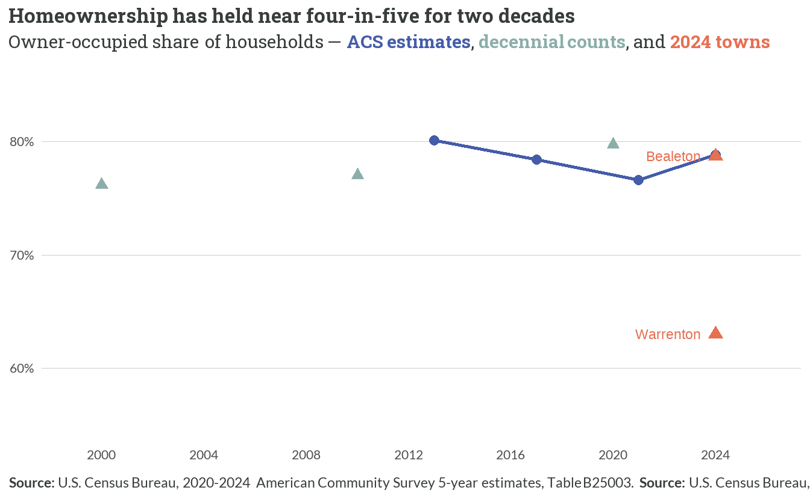
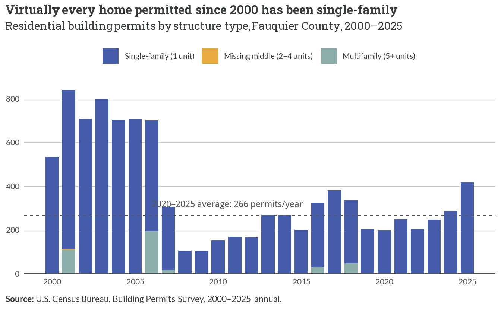
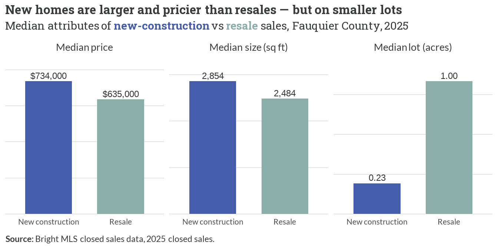

1 Current Inventory & Recent Production Trends
1.1 Study area
- Fauquier County covers roughly 648 square miles — a large, predominantly rural jurisdiction between the Piedmont and the outer Washington, D.C. suburbs.
- The study zooms in on the county’s two population centers: the Town of Warrenton (the county seat, ~10,000 residents) near the center, and the unincorporated Bealeton CDP (~6,000) to the south along US-17.
- Roughly 90% of the county’s land lies outside its eight designated service districts, where public water and sewer — and therefore most new housing — are concentrated (see the land-constraint callout below).
1.2 Housing stock composition

- Single-family detached homes are 85.1% of Fauquier’s housing stock — essentially matching the GP study’s 84.8% and far above Virginia’s 61.3%.
- The county has proportionally little multifamily: units in 5+ structures are about 3% of the stock, versus roughly 18% statewide.
- Both towns are more multifamily than the county overall — Warrenton in particular carries a larger share of attached and mid-size multifamily units — but the small place-level counts are statistically noisy (see the reliability caveat below).
| Structure type | Warrenton | Bealeton |
|---|---|---|
| Single-family detached | 1,110 (High) | 2,096 (High) |
| Single-family attached | 141 (Medium) | 874 (Medium) |
| 2–4 units | — | 335 (Medium) |
| 5–19 units | 287 (Medium) | 368 (Medium) |
| 20+ units | — | 287 (Medium) |
| Mobile home / other | — | — |
| Cells with a coefficient of variation above 30% (Low reliability) are suppressed (—). High = CV ≤ 15%, Medium = CV 15–30%. |
- Only single-family detached counts are reliable (High) in both towns; most small-structure categories carry CV > 30% and are suppressed — the towns are too small for ACS to size their multifamily and manufactured stock precisely.
1.3 Age of the housing stock

- The county’s median year built is 1987, and 56% of all homes were built before 1980 — an aging stock overall.
- Owned homes skew newer: 34% were built in 2000 or later, reflecting the county’s for-sale subdivision growth.
- The rental stock skews older: about 32% of renter-occupied homes predate 1960, versus 12% of owner-occupied homes — the opposite of a “newer rental” pattern.
NoteMedian year built — the towns
Warrenton’s median year built (1987) matches the county, but Bealeton’s stock is meaningfully newer (median 1998) — consistent with its role as a recent growth node along US-17. Both town medians are High-reliability estimates.
1.4 Tenure

- Fauquier’s owner-occupied share has stayed between 76% and 80% across both decennial counts (2000–2020) and ACS estimates (2013–2024) — remarkably stable.
- The towns diverge sharply in 2024: Bealeton is ~79% owner-occupied (High reliability), while Warrenton is only ~63% — the county’s clearest concentration of renters.
NoteCaveat: two different measures
The decennial figures are 100% counts (2000, 2010, 2020); the ACS figures are 5-year rolling estimates (period-average). They measure the same concept on different universes and are kept visually distinct here — small level differences between the two series are expected, not real change. Documented in the data & methodology appendix.
1.5 Residential construction

- Missing middle is virtually nonexistent: just 10 total 2–4-unit permits were issued across the entire 2000–2025 period.
- Multifamily (5+) is rare and episodic — notable only in a few years (e.g. ~108 units in 2001, 48 in 2018).
- Permitting has averaged 266 units/year over 2020–2025, essentially all single-family (above the GP study’s earlier 241/yr benchmark).
- Town-level permits are not separable: the Census place-level BPS file timed out on retrieval (HTTP 524), so this figure is county-wide; Bealeton is unincorporated and issues through the county regardless.
1.6 New construction vs. resale

- New construction sold for a higher median price in 2025 (~$734,000 vs ~$635,000 for resales) and was larger (~2,854 vs ~2,484 sq ft).
- But new homes sat on far smaller lots (~0.23 vs ~1.0 acre) — and new-construction lot sizes have shrunk sharply since 2022 (median ~1.68 acres then), as production has concentrated in service-district subdivisions.
- The signal for the “missing middle” theme is not lot size but product type: new supply is larger detached houses, with no starter-scale or small-lot infill product entering the market.
1.7 Vacancy, manufactured housing & land constraints
NoteVacancy: a very tight market
Fauquier’s overall vacancy rate is about 6.6% (1,901 of 28,621 units), but most of that is not available housing: 550 units are seasonal/recreational and 883 are “other vacant” (held off-market). Only about 1.2% of all units are actually available — for rent (174) or for sale (178) — a sign of an extremely tight market. Source: ACS 2020–2024, Table B25004.
NoteTown spotlight — Bealeton and manufactured housing
Interviews flagged manufactured housing as a Bealeton-area concern, but the ACS place estimate cannot quantify it: Bealeton’s recorded mobile-home count is 0 with a coefficient of variation too high to use. County-wide, ACS records about 470 mobile homes (1.6% of the stock, Medium reliability). The manufactured-housing concentration described around Bealeton is real on the ground but falls below what ACS 5-year place estimates can reliably size — a data limitation, presented as counts, not rates. Source: ACS 2020–2024, Table B25024.
NoteLand constraint — where housing can go
Fauquier’s Comprehensive Plan channels growth into eight service districts:
- ~90% of the county’s land is rural, outside those districts and largely unavailable for dense development.
- About 8,381 units of unbuilt build-out capacity remain within the service districts.
- 97% of permits issued 2001–2018 were single-family detached, reinforcing the low-density pattern.
Source: Fauquier County Comprehensive Plan (Ch. 1 p. 11, Ch. 3 pp. 7–11).
1.8 What the interviews said vs. what the data shows
ImportantInterview validation
- “Missing middle — only large homes on large lots, no starter product.” Confirmed and nuanced. Permits are ~all single-family (10 missing-middle permits in 25 years); new construction is larger and pricier than resale (Figure 1.6, Figure 1.5). The lot-size story has flipped, though: new homes are now on smaller lots as growth concentrates in service districts — the constraint is product type (no small/attached/starter homes), not lot size.
- “Conservation easements and rural zoning constrain developable land.” Confirmed. ~90% of county land is rural; developable capacity is a finite ~8,381 units inside the service districts (land-constraint callout).
- The interview claim that only 3 for-sale listings under $350k existed (April 2026) is a market-pricing signal carried in the ownership-market chapter (Chapter 3).